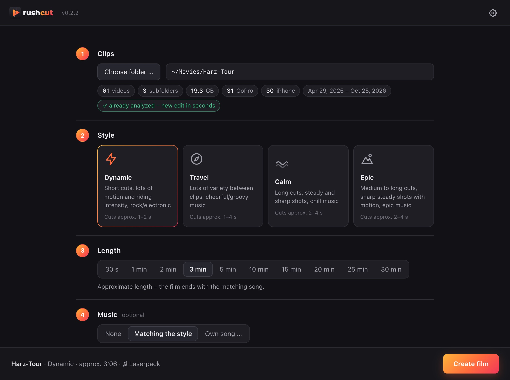
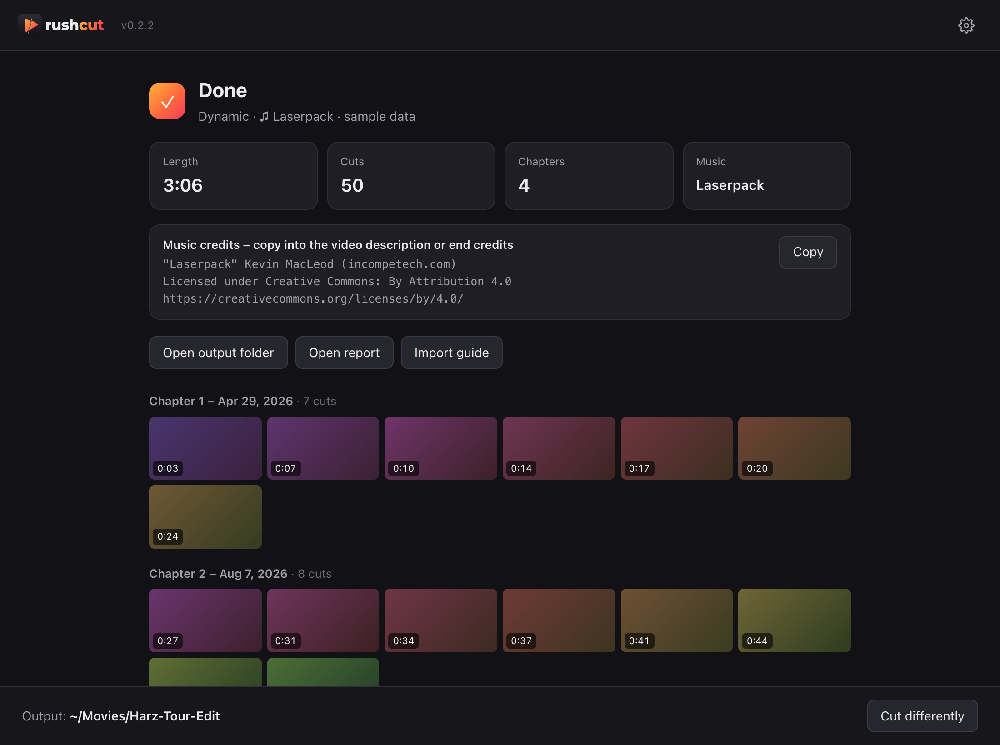

Raw footage becomes a suggested edit – locally, in minutes.
GoPro and phone clips in, a ready timeline for DaVinci Resolve, Filmora and EDIUS out. Not a finished video like Quik, but a rough cut you keep editing in your own software.
macOS 14+ & Windows 10/11 · no uploads · no account · everything in one package

What Rushcut does
Stop spending evenings scrubbing through footage.
Rushcut watches all of your footage, picks the best scenes and lays them on the beat – originals stay untouched, and the result is a timeline you keep editing.
Read clips
One folder including all subfolders – GoPro, iPhone, Android. Originals are never changed.
Rate scenes
Motion, sharpness, exposure, shake and audio – every scene gets a score.
Use GoPro sensor data
Riding intensity, GPS speed, HiLight tags, face detection (selfies are left out); upside-down cameras are rotated.
Cut to the beat
Chapters per recording day, cut length depending on style and motion.
Optional music
30 royalty-free songs built in, plus your own song or your own music folder.
Write a timeline
FCP7 XML and EDL with linked original clips, music, chapter markers and a report.
How it works
Five steps to a film
One window, five decisions. When the film is ready you hear a short ping.
- 1
Clips
Choose a folder or drop it onto the window – subfolders are included.
- 2
Style
Dynamic, Travel, Calm or Epic – sets cut length, shot selection and music.
- 3
Length
30 seconds to 30 minutes. With music, the film ends with the song.
- 4
Music
None, matching the style or your own song. Listen with ▶, “Other song” picks the next one.
- 5
Output
Choose a target folder – everything for further editing in one place.
The result
A timeline, not a finished video
The output folder contains the timeline as XML and EDL, the songs used, a report and import instructions. Clips are linked – you keep editing with the originals.
V1videoA1original audio, lowered and linked to V1A2music◆one marker per chapter

| Software | Import | Status |
|---|---|---|
| DaVinci Resolve | File → Import → Timeline → <Film>.xml | ✓ tested |
| Filmora | File → Import Media → Import Timeline XML | ✓ tested |
| EDIUS 11 Pro | Project with the preset from README.txt, then File → Import Project → FCP XML | ✓ tested |
Download
Download, install, go
Both packages include everything – Python, ffmpeg and music. Nothing else needs to be installed.
macOS
macOS 14 or later, Apple Silicon
Download Rushcut.dmgDrag the app to “Applications”. Not signed yet: right-click → “Open” on first launch.
Windows
Windows 10 or 11, x64
Download Rushcut-Setup.exeInstalls without admin rights. SmartScreen: “More info” → “Run anyway”.
FAQ
Good to know
Are my videos uploaded anywhere?
No. Rushcut runs entirely on your computer – no uploads, no account, no tracking. Original clips are only read, never changed.
How is Rushcut different from GoPro Quik?
Quik delivers a finished video and needs its app and cloud. Rushcut delivers a suggested edit as a timeline you keep editing freely in DaVinci Resolve, Filmora or EDIUS – with the original clips in full quality.
Which cameras are supported?
Anything that writes common video files – GoPro, iPhone, Android and others. For GoPro cameras with sensor data (GPMF), Rushcut also uses speed, riding intensity, HiLight tags and orientation.
Can I use the built-in music on YouTube?
Yes. The songs are by Kevin MacLeod (incompetech.com) under CC BY 4.0 – including monetized videos. Rushcut puts the music credits into the output folder; they belong in the video description or end credits.
How long does an edit take?
The first analysis takes a few minutes (about 3 minutes for roughly 20 GB of footage). After that, a new edit with a different style, length or music is ready in about a second.
Which languages does Rushcut speak?
English and German – following the system language, switchable in the settings. That includes the report, instructions and folder names in the output.